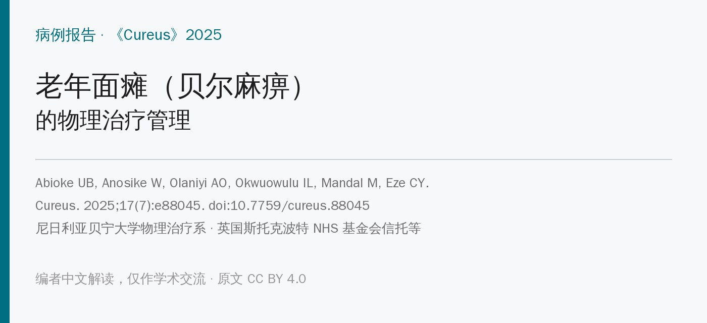
🔖原文信息（编者中文重排）
📚 文献信息
▪ Abioke UB, Anosike W, Olaniyi AO, Okwuowulu IL, Mandal M, Eze CY. Physiotherapy Management of Bell's Palsy in an Elderly Patient: A Case Report. Cureus. 2025;17(7):e88045. doi:10.7759/cureus.88045
▪ 中文题目：老年面瘫的物理治疗管理：病例报告
▪ 作者单位：尼日利亚贝宁大学物理治疗系、伊巴丹大学医学院、尼日利亚大学医学康复系；英国斯托克波特 NHS 基金会信托老年医学科等
▪ 研究类型：单个病例报告
贝尔麻痹（特发性周围性面瘫）是康复门诊的常客：一侧额纹消失、闭眼不全、口角歪斜，喝水漏、吃饭塞腮、说话含糊。多数人几个月内能自己恢复，但年纪大、合并糖尿病、高血压的患者恢复更慢、更不完全。
药物方面，早期用糖皮质激素基本是共识；物理治疗能做什么、怎么组合，临床做法差别很大。这篇病例把一位 75 岁老人 8 周里用到的Kabat/PNF、电刺激、按摩、面部训练、镜像反馈、肌内效贴都配了照片，参数也写得比较细，适合当作一份“面瘫物理治疗操作清单”来看。
但它是单个病例，而且有不少前后对不上的地方，后面会一条条列出来。
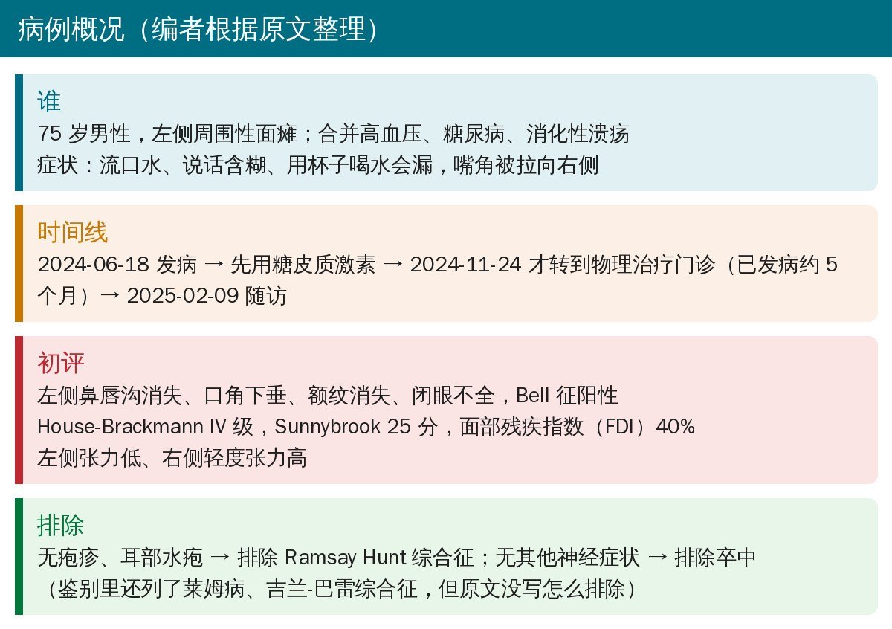
• 基本情况：75 岁男性，2024 年 6 月 18 日左侧面部无力，出现流口水、说话含糊、用杯子喝水困难，口角被拉向右侧；既往有高血压、糖尿病、消化性溃疡
• 先药物：用糖皮质激素控制面神经炎症，病情稳定后于 2024 年 11 月 24 日转到物理治疗门诊，距发病已约 5 个月
• 查体：神志清楚，血压 136/82 mmHg，脉搏 101 次/分，血糖 6.3 mmol/L
• 面部表现：左侧鼻唇沟消失、口角下垂、额纹消失、闭眼不全，Bell 征阳性，面部活动幅度明显减少；左侧张力低、右侧轻度张力高
• 初评量表：House-Brackmann IV 级（中重度），Sunnybrook 面神经分级 25 分，面部残疾指数（FDI）40%
• 鉴别诊断：无疱疹和耳部水疱，排除 Ramsay Hunt 综合征；没有其他神经症状，排除卒中；白细胞正常、病毒 PCR 阴性，作者据此排除病毒感染
顺带一提，额纹是否消失是区分周围性和中枢性面瘫的关键：额肌受双侧皮质支配，中枢性面瘫（如卒中）额纹通常保留。本例额纹消失，符合周围性面瘫。
门诊治疗每周 3 次、每次 45 分钟、共 8 周，目标是提高肌肉功能、改善面部对称。整理成表如下：
表 1 治疗内容和参数（编者根据原文正文和图注整理）
| 项目 | 怎么做 | 剂量 |
|---|---|---|
| Kabat 技术 | 分额-眼、鼻唇、口周-颏三个区域，借对角、旋转的 PNF 模式诱发患侧收缩 | 每区 3 组 × 5～10 次，每周 3 次 |
| 电刺激（NMES） | 电极放在眼轮匝肌、口轮匝肌 | 1～10 Hz、2～5 mA、脉宽 150 µs、通 5 秒断 15 秒；每次 15～30 分钟（图注写 15 分钟），每周 3 次 |
| 按摩和触觉刺激 | 提捏手法，涂爽身粉减少摩擦 | 每次治疗 5～10 分钟 |
| 面部训练 | 皱额、微笑、抬眉、噘嘴 | 每个动作 5 次，每天 3 次 |
| 镜像反馈 | 对着镜子做面部训练、Kabat 和贴扎下的动作 | 贯穿每次治疗 |
| 肌内效贴 | 额肌纵向贴、眼轮匝肌环形贴（图注还有口轮匝肌）；额部留一小段不粘，做改良抬眉 | 原文未写更换频率 |
| 家庭训练 | 吹气球样鼓腮、吸腮、微笑、皱眉、噘嘴 | 频率不变，强度和次数逐步加 |
另外还有宣教和生活建议：用吸管喝水避免漏，鼓励用患侧咀嚼，白天戴护目镜、夜间贴眼防干燥。
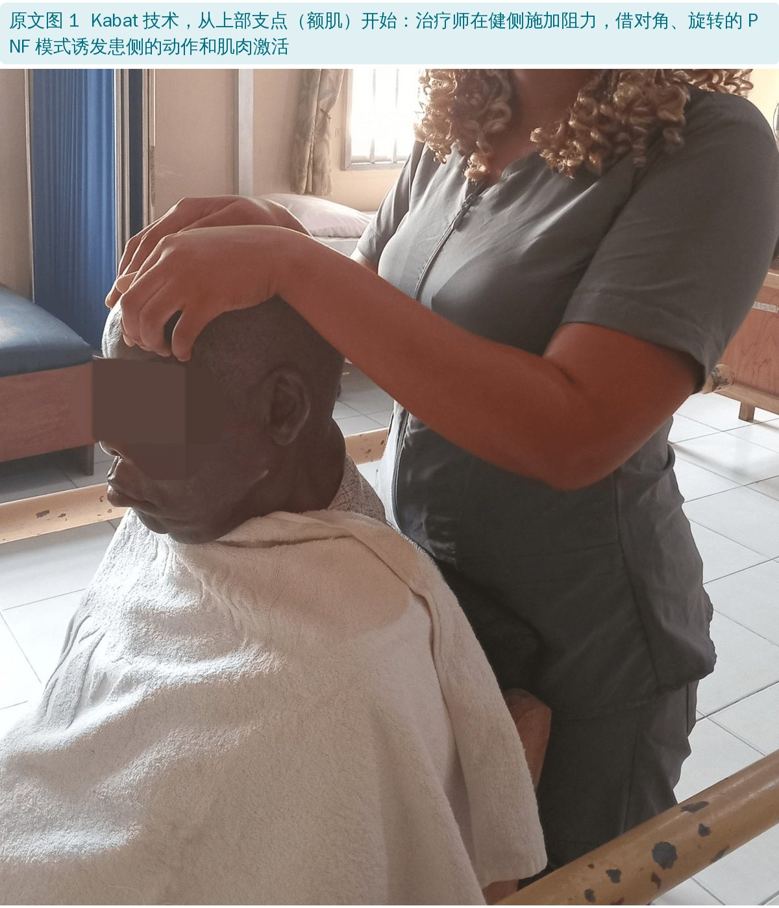
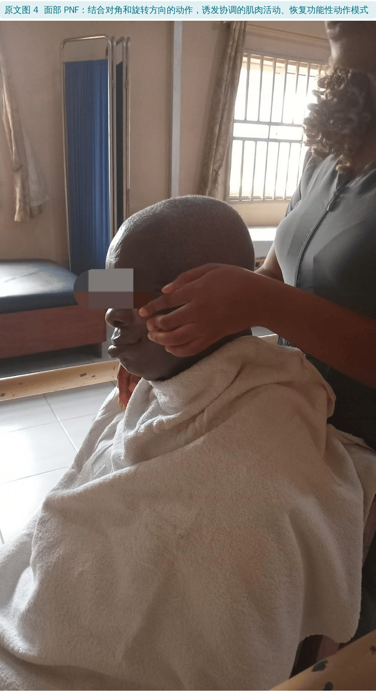
Kabat 技术本身就是面部 PNF：治疗师在特定方向施加阻力，借对角、旋转的运动模式诱发肌肉收缩。原文把它和“PNF”分成图 1、图 4 两项来写，实际是同一类方法。
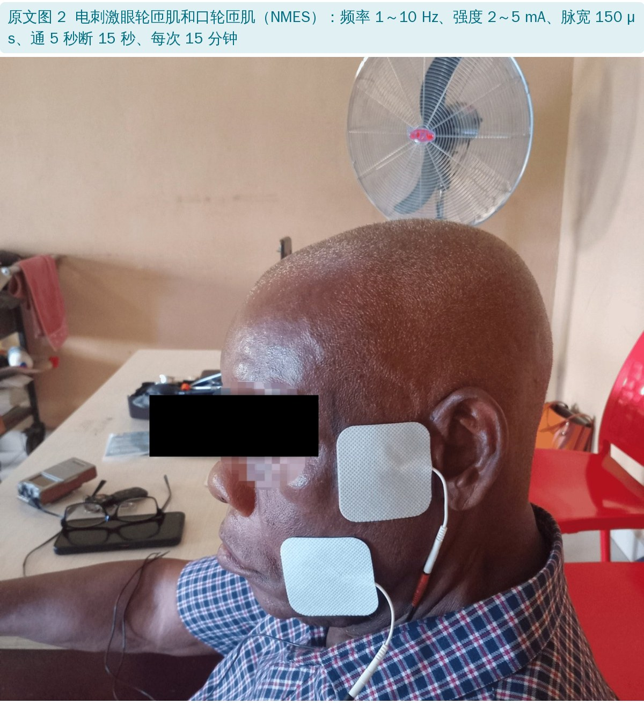
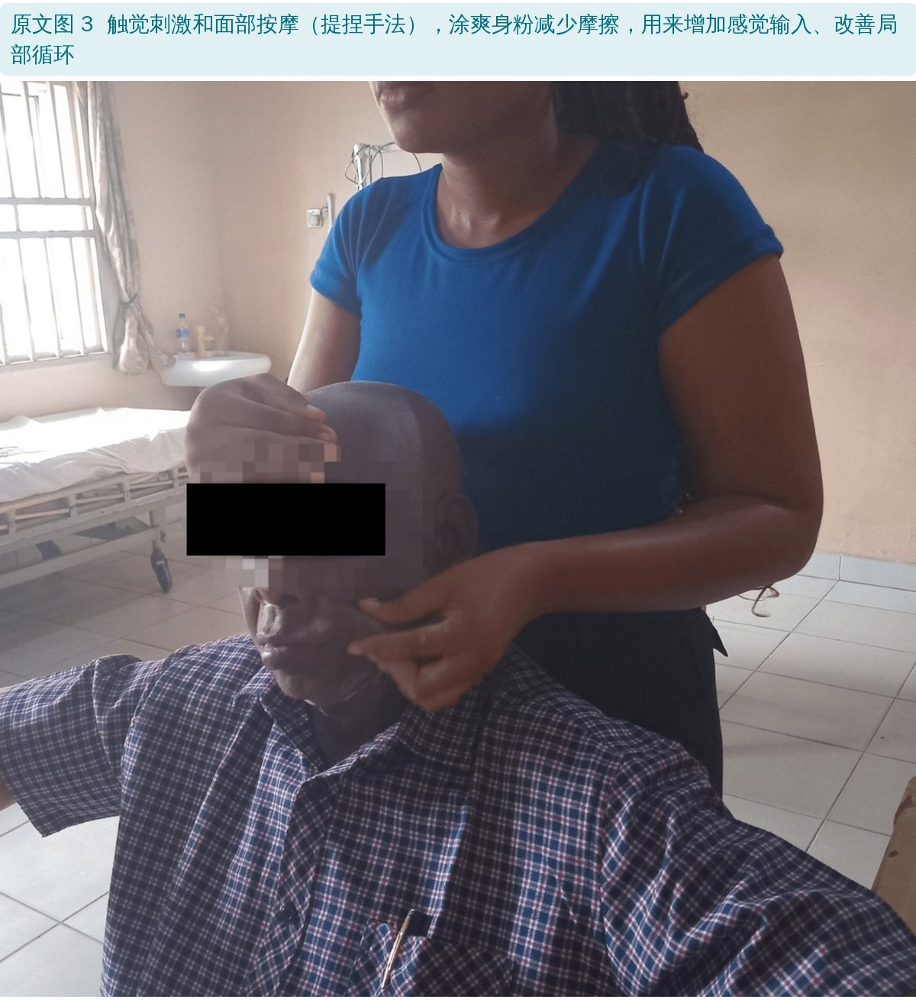
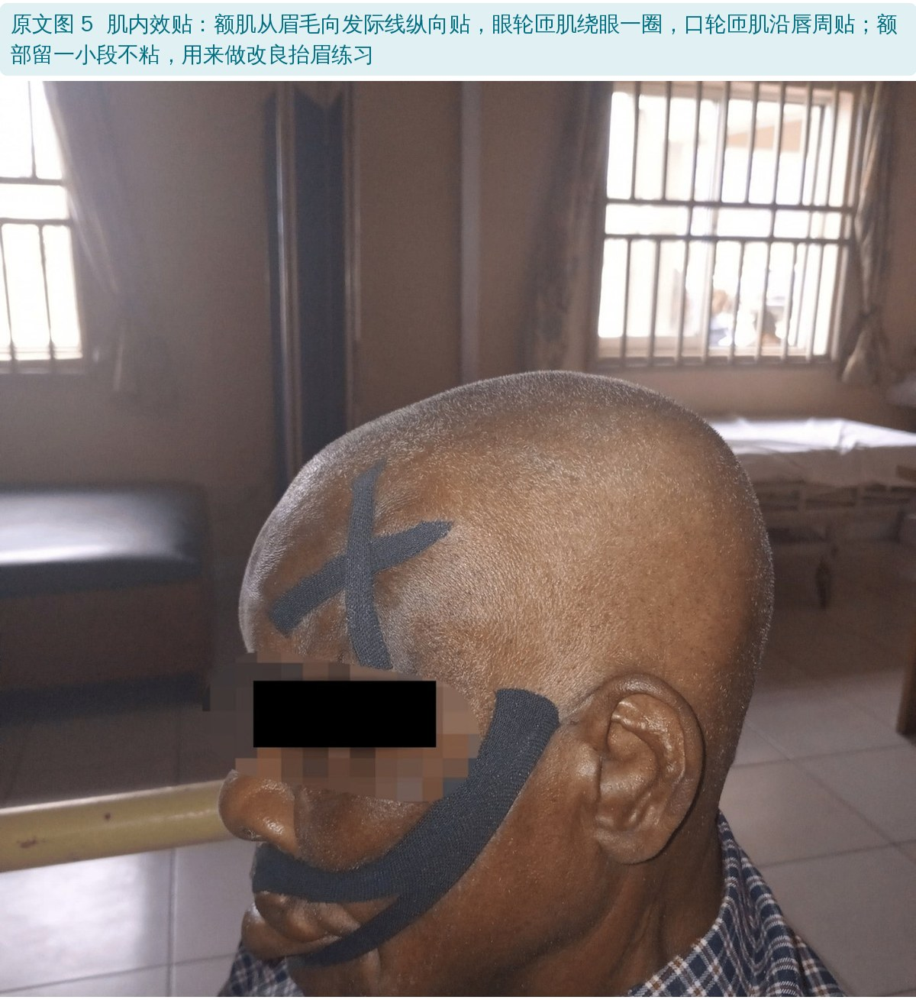
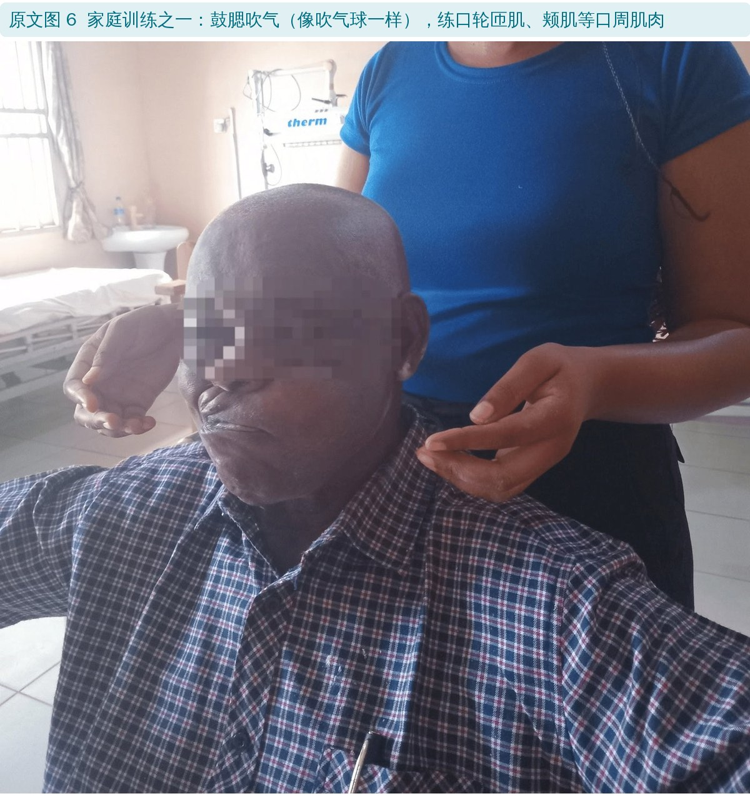
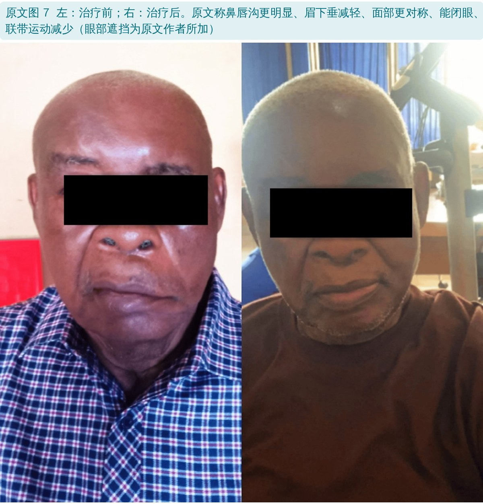
表 2 治疗前后的结局指标（编者根据原文表 2 翻译）
| 指标 | 治疗前 | 治疗后 |
|---|---|---|
| House-Brackmann 分级 | IV 级 | III 级 |
| 面部残疾指数（FDI） | 40% | 70% |
| 软尺测量（耳屏到口角） | 右 12.0 cm，左 12.5 cm | 右 12.0 cm，左 12.0 cm |
| Sunnybrook 评分 | 25% | 60% |
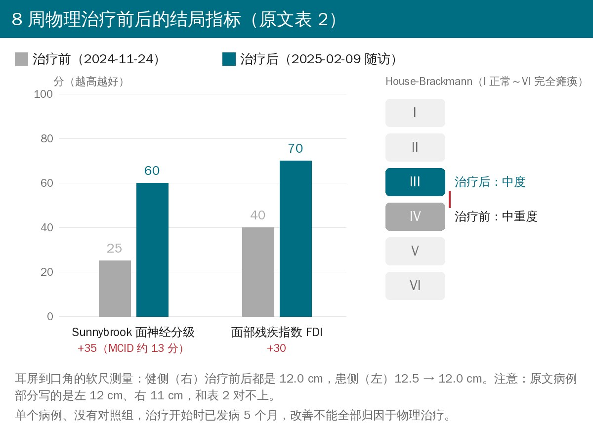
• Sunnybrook 25 → 60，作者认为超过了约 13 分的最小临床重要差异（MCID）
• FDI 40% → 70%，日常面部功能和社交方面都有改善
• 左侧耳屏到口角的距离从 12.5 cm 缩到 12.0 cm，与健侧一样
• 功能上能用杯子喝水了，咀嚼和说话也更清楚；患者自述社交时更自信
• 早期、多学科：作者反复强调早期干预和耳鼻喉科、物理治疗等多学科配合的重要性
• 引 Ferreira 2015：物理治疗加药物比单用药物效果好
• 引 Martineau 2022 的 Mirror Effect Plus Protocol（镜像效应加强方案）：一年随访仍有改善；本例没用这个方案，但个体化早期干预“可能有类似效果”
• 引 Marotta 2020：电刺激对未恢复的面瘫有效；引 Khan 2022 系统综述：面部训练有效
• 糖尿病会拖慢神经修复：治疗时密切监测血糖和激素用量；电刺激从低强度开始按耐受加量，训练安排了休息日，每周加一次门诊随访
• 局限：作者只提到一条：前期肌内效贴粘性差，没到下次治疗就掉了，后来换了质量更好的贴布
• 单个病例、没有对照：病例报告最多说明“这样做是可行的”，不能说明“这样做有效”
• “早期干预”其实不早：发病 6 月 18 日，物理治疗 11 月 24 日才开始，已经过了 5 个多月。面瘫的自然恢复可以持续数月，HB IV → III 有多少是自然恢复、有多少是治疗作用，分不开
• 多种方法叠在一起：Kabat、电刺激、按摩、训练、镜像、贴扎同时用，就算有效也不知道是哪一样起作用
• 评估者没有设盲：量表应该由治疗团队自己评，主观成分大；治疗前后的照片光线、衣着、角度都不同，而且是静息照，看不出闭眼和动作幅度
• 联带运动没有评估：原文图 7 说“联带运动减少”，但治疗前从没报告过联带运动，Sunnybrook 的联带运动分项也没给。对一个发病 5 个月、还在用电刺激的患者，联带运动恰恰是最该盯的指标
• 电刺激本身有争议：面瘫用电刺激的证据并不一致，也有学者担心它可能促进联带运动；本例无法回答这个问题（编者补充）
• 优点：每种治疗都配了照片，电刺激参数、Kabat 分区和剂量、贴扎方向写得具体，临床可以直接参考；用了 HB、Sunnybrook、FDI 三个量表，比只写“明显好转”强
• 面部测量三处数字不一致：病例部分写左 12 cm、右 11 cm；结果部分写患侧“初始 12.5 cm”；表 2 是右 12.0 cm、左 12.5 cm。健侧到底是 11 还是 12 cm，患侧是 12 还是 12.5 cm，前后对不上
• “早期干预”和时间线矛盾：摘要、讨论、结论都说早期干预促成了恢复，但表 1 显示发病 5 个多月后才开始物理治疗
• 电刺激时长：正文写每次 15～30 分钟，图 2 图注写 15 分钟
• 治疗频率：方法写每周 3 次、家庭训练“频率不变”；讨论却说“调整训练频率留出休息日”“每周加一次门诊”
• 随访：结果写“每周随访”，表 1 只有一个随访日期（2025-02-09）；而且 11 月 24 日到 2 月 9 日约 11 周，和“8 周方案”也对不上，原文没说明
• 贴扎部位：正文只写了眼轮匝肌一条、额肌两条，图 5 图注又多了沿唇周贴的口轮匝肌
• Sunnybrook 的单位：正文一处写“25”分，其余写“25%”；Sunnybrook 是 0～100 的综合分，不是百分比。MCID“约 13 分”引用的是 Ross 1996 的量表开发文献，那篇并没有给出 MCID
• FDI 前后写法不一：结果写 40% → 70%，讨论写 40 → 70；FDI 分躯体功能和社会功能两个分量表，原文没说这个总数怎么算
• 引文和描述不符：讨论称 Ferreira 2015 是随机对照试验，但参考文献的标题是“a focused review”（综述）；Gantz 1999 是面神经减压手术的文献，被用来支持“早期个体化保守治疗的重要性”
• 激素监测的时间：讨论说治疗全程监测激素剂量和时机，但激素是发病早期用的，5 个月后转到物理治疗时疗程应早已结束，原文没交代
• 排除病毒感染的依据：引言说病毒再激活是常见诱因，鉴别诊断又用“白细胞正常、病毒 PCR 阴性”来排除病毒感染；没写 PCR 测的是什么病毒、取的什么标本。莱姆病和吉兰-巴雷综合征列进了鉴别，但没写怎么排除
• “生命体征平稳”：同一句里脉搏是 101 次/分，已经超过 100
• 图 7 的描述看不出来：图注说能闭眼、联带运动减少，但两张都是静息照，眼部还被遮住了
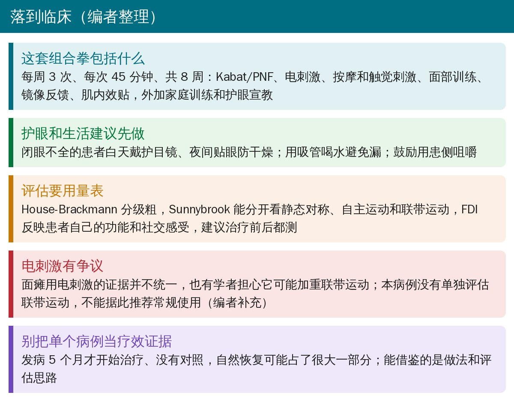
🔖临床要点（编者整理）
• 先护眼：闭眼不全时，白天戴护目镜、夜间贴眼，防止暴露性角膜炎，比任何训练都优先
• 训练对着镜子做：小幅度、慢、两侧对称，避免用力做大表情；用镜子给视觉反馈
• Kabat/PNF 可作为门诊主线：分额-眼、鼻唇、口周三个区，每区 3 组 × 5～10 次，本例的分区和剂量可以直接参考
• 电刺激慎用、要监测：如果用，注意观察有没有出现联带运动（如闭眼时口角跟着动），并用 Sunnybrook 的联带运动分项记录（编者补充）
• 评估用三个量表：House-Brackmann 看整体分级，Sunnybrook 分开看静态对称、自主运动和联带运动，FDI 看患者自己的功能和社交感受
• 老年、糖尿病患者恢复慢，要把预期讲清楚；发病后迟迟不恢复或出现新的神经症状，应转回医生重新评估（编者补充）
欢迎关注骨科康复小黄公众号，获取更多物理治疗的专业知识！
📄参考文献：
Abioke UB, Anosike W, Olaniyi AO, Okwuowulu IL, Mandal M, Eze CY. Physiotherapy Management of Bell's Palsy in an Elderly Patient: A Case Report. Cureus. 2025;17(7):e88045. doi:10.7759/cureus.88045
原文 © 2025 Abioke et al.，以知识共享署名 4.0 国际许可（CC BY 4.0）开放获取，允许在注明原作者和出处的前提下转载和改编。原文注明已取得患者的治疗和公开发表知情同意。本文为学术交流用的中文解读：原文图 1～7 为治疗照片，图内无英文文字，编者统一缩放并加中文图注，人物画面和眼部遮挡均保持原文作者的处理；表格为编者翻译；首图、病例概况卡、结局指标重绘图、临床要点卡和封面为编者根据原文整理绘制。仅供学习交流，如有侵权请联系删除。